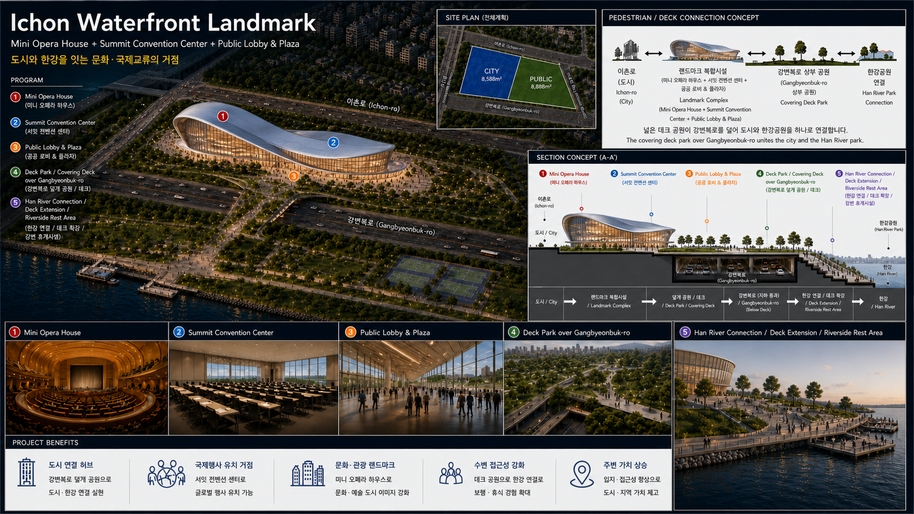

Ichon Redevelopment Analysis
이촌동 초입구역의 상대가격 변화, 특별계획구역 가능성, 주거·상업·공공용지 개발 시나리오를 정리한 HTML article입니다.
Read the Article
Download the Proposal

Preview image: 수변 공공·도시 기능 결합형 개발안 개념도
이촌동 초입구역의 상대가격 변화, 특별계획구역 가능성, 주거·상업·공공용지 개발 시나리오를 정리한 HTML article입니다.

Preview image: 수변 공공·도시 기능 결합형 개발안 개념도